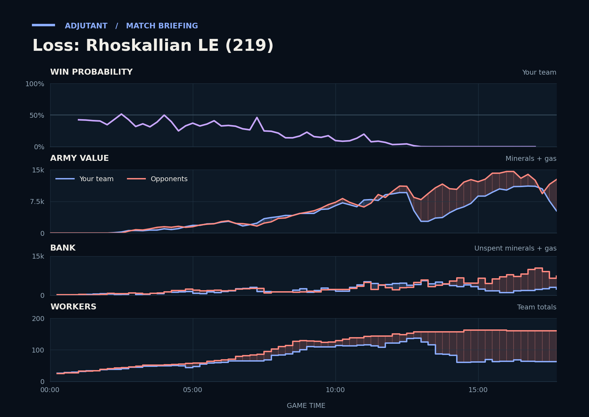

Loss: Rhoskallian LE (219)
Provisional debrief. The full report (timeline, insights and analysis) is being generated.

Cached narration uses different analysis inputs (facts, engine notes, prompts or model settings). It has not been regenerated for this report.
**Loss.** You lost because the opponents out-produced you, with more income and more army built, and they still had far more army and workers at the gg.
**Why**
- 6:05–7:15: Papa's Roaches and Spinner's Stalkers killed Scallop's Vikings and Hellions at TakeTheTip's third, leaving Scallop's army at 575.
- 10:15–12:05: You won the trade, but Papa's army was back to about 5,500 by the window's end.
- 16:13–17:45: You killed more army here, but the opponents still had 160 workers and far more army at the gg.
Current engine analysis: Loss. Review 9:10–9:44: army value: yours 4,650→5,700, theirs 5,625→6,725. The biggest fight came at 12:29–14:17 (17,650 lost, 9,800 killed).